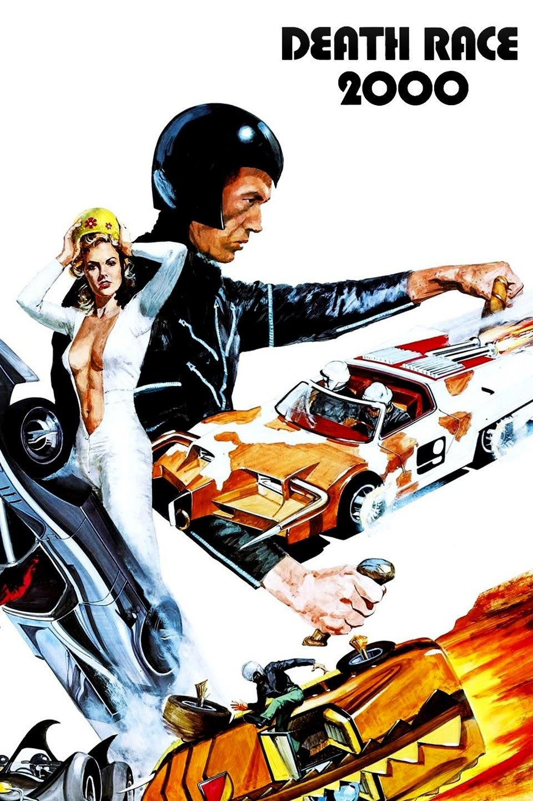

In 1979, the United States collapsed, leading to massive civil unrest and economic collapse. The government was restructured into a totalitarian regime under martial law. To pacify the population, the government has organized the Transcontinental Road Race, where a group of drivers are driving across the country in their high-powered cars, infamous for violence, gore, and innocent pedestrians hit for bonus points.
In the year 2000, the five drivers of the twentieth annual race, who stick to professional wrestling style people and properly drive themed cars, include Frankenstein, the mysterious black-clad champion and national hero; Machine Gun Joe, a tough guy gangster from Chicago; Calamity Jane, a cowgirl; Matilda The Hun, a neo-Nazi; And Nero the hero, a Roman gladiator. Each unit with a navigator of the opposite sex, who also implicitly functions as a love interest. The race is covered on national television by a news crew headed by the boisterous and comedic Junior Bruce, the seductive matron Grace Pander, and the laconic commentator Harold (a parody of Howard Cosell). The game has sadistic rules, where killing babies and disabled people will give the player extra points. Machine Gun Joe is the main opposition to Frankenstein.
A resistance group led by Thomasina Paine, a descendant of the American revolutionary Thomas Paine, plans to rebel against the president's regime by sabotaging the race, killing most of the drivers and taking Frankenstein hostage as a lever against the president. The group is assisted by Paine Annie's great-granddaughter, Frankenstein's last navigator. She plans to lure him into an ambush to be replaced by a doppelganger. Despite a hacked national broadcast made by Ms Paine herself, the breaking of the race resistance is covered by the government and instead blamed the French, who are also blamed for ruining the country's economy and system. telephone.
At first, the Resistance plan works. Nero is killed when he runs over a doll trapped by the Resistance, who makes a mistake for a royal baby and proceeds to execute him to score points. Matilda drives a cliff while she follows a false detour created by the Resistance. Calamity Jane inadvertently drives a landmine. This leaves only Frankenstein and Machine Gun Joe in the running.
As Frankenstein does not survive all the attempts made in her life during the race, Annie comes to discover that the Frankenstein that she knows is anything but a willing government official, nor is he the original man. The current Frankenstein is, in fact, one of a number of random wings of the state trained exclusively to race on identity. "When one runs out, they bring another," he tells Annie. The current Frankenstein also reveals that he has plans of his own: when he wins the race and shakes hands with Mr. President, he will detonate a grenade that has been implanted in his prosthetic right hand (he calls it a "hand grenade"). he has kept hidden by keeping his glove on at all times (even while undressed). His plan goes awry, however, when Machine Gun Joe attacks and Annie kills him using Frankenstein's "hand" grenade.
Having successfully outmaneuvered rival pilots and the Resistance, Frankenstein is declared the winner, though he is wounded and unable to carry out his original grenade attack plan. Annie prefers the Frankenstein costume and plans to stab Mr. President while he is on the podium. As the president congratulates "Frankenstein" on his victory, in the process declaring war on the French and appointing Frankenstein as the leader of the war, Annie is wounded by her own grandmother, desperate for revenge against Frankenstein for allegedly killing her during the career (he had actually just drugged her). The real Frankenstein takes advantage of the confusion and strokes the president's stage with his car, finally fulfilling his wish to kill him for life.
In the epilogue, Annie and Frankenstein get married. Frankenstein, now President, suppresses the race and plans to rebuild the country. However, Junior Bruce begins to protest against her. When he can't find a moral reason to continue the race, he starts screaming that it's a way of life, to keep America satisfied, to entertain and give the people what they want, now desperate for the race to perpetuate. Frankenstein, annoyed, executes it with his car and leaves with Annie to the applause and applause of the crowd.